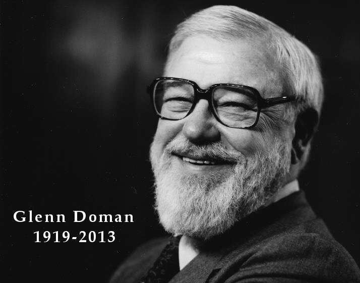

The Pioneer of the Doman Method®
Meet the man whose innovative concepts transformed lives globally.
Glenn Doman’s revolutionary treatment program was called “The Glenn Doman Method®” or “The Doman Method®”.
Doman International proudly honors Glenn and his contributions to humankind by recognizing him for his dedication and calling our work “The Doman Method®”.
Through Glenn’s groundbreaking work in child development, thousands of children on six continents diagnosed with Autism, cerebral palsy, developmental delay, epilepsy, learning difficulties, ADD/ADHD, as well as Trisomy 21 (Down Syndrome) and other genetic abnormalities, have been helped by the Doman Method.
How It All Began
A journey through the origins of the Doman Method® and its impact today.
As a young physical therapist, Glenn Doman worked with Dr. Temple Fay, the chief neurosurgeon at Temple University Hospital, to develop treatment programs to help children and adults who had suffered brain damage. He found that conventional therapies he tried with his patients were not helping his patients get better. He realized these traditional treatments were focused on the symptoms, rather than the actual problem, which was in the brain. He realized that traditional physical and speech therapies were just symptom-focused, but yielded poor results as they were not actually fixing the source of the problem.
Glenn Doman, with the help of his wife Katie, created new treatment programs for his patients that directly treated the brain, rather than the symptoms. These patients progressed far faster and better than he had ever previously hoped.
Glenn expanded his work to help children with special needs, as they had neuro-developmental conditions. While children might have been given diagnoses of autism, cerebral palsy, developmental delay, ADD/ADHD, Trisomy 21 and other genetic disorders, epilepsy, learning difficulties, speech apraxia, and a host of other diagnoses — Glenn found that these children had a neurological condition and that if their brain development could be enhanced, their function also improved. For many of these children, Glenn learned that society tended to limit these children — that a diagnosis was given, but that no hope was given with it. He did not accept this way of thinking. His new treatments were called “The Doman Method”.
While he achieved great results with the children he saw, he found that it was when the families of the children carried out the treatment at home that they achieved the very best results. Glenn began to teach the families the fundamentals of brain growth and development, and how to carry out the treatment programs at home. Moving from a therapist-based model to a family-based treatment model was a paradigm shift in the field of treatment. This was perhaps the greatest single evolution in the Doman Method in history, which carries on today.
His revolutionary treatment programs and techniques were called “The Glenn Doman Method™” or “The Doman Method®”.
Doman International proudly honors Glenn and his contributions to humankind by recognizing him for his dedication and calling our work “The Glenn Doman Method”.
The Doman Method expanded as new treatments were discovered during and after Glenn’s lifetime. The method is not a single treatment or activity, it is a holistic system of treatments that incorporates physiological, nutritional, physical, sensory, and cognitive treatments. For this reason, a team of expert staff in these different areas is needed to teach these treatments to families. At Doman International, a team of teachers instruct parents how to do the integrative treatment programs at home to help their children reach their fullest potential.
Glenn Doman passed away in 2013. He devoted his lifetime to teaching parents. Just five months before he passed away at the age of 93, he was still lecturing the families of children with special needs. Katie Doman passed away in 2017. Both of them continued in their work in teaching until the last year of their lives. They were beloved parents, grandparents and great-grandparents.
The Doman family today continues to carry forth the discoveries and teachings of Glenn Doman and work to make his dream a reality — to help all the children worldwide reach their fullest potential. At Doman International, five members of the Doman family continue to teach the Doman Method to families all around the world.
Douglas and Spencer Doman, son and grandson of Glenn, lead Doman International as president and CEO.
The Doman Method continues to evolve, as new treatments are discovered that can help children, and then are added to the method. Glenn’s dream to help children with special needs get better remains a reality, as the team at Doman International continues to search for new answers, and teach and support families worldwide.